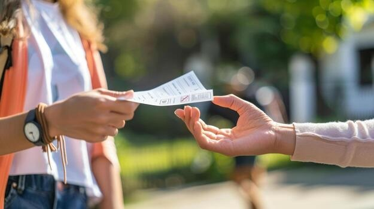

Page 1: | Home
Page 2: | The Case For Digital Advertising
Page 3: | The Case For In-Person Advertising
Page 4: | Final Thoughts
Page 5: | Works Cited
In-person marketing, however, has many important advantages regarding this issue. While not as easy for the event organizers to do, sitting at a table with some fliers, ready to answer question in real time, leaves more of an impact on the students. In contrast to the hundreds of digital advertisements students see on a weekly basis, each one of which is competing for their attention, in-person advertisements stand out more because they are much rarer and demonstrate that the event they are being asked to attend is worth at least one person’s time. In the article “Promoting Campus Activities: Encouraging Student Participation,” the authors’ research indicated that word of mouth is still the most effective way of convincing students to attend school events, citing a survey done at a university event where students were asked to indicate how they heard about the event (Joyce, Lubbers 11). Additionally, the benefits of being able to interact with potential attendees in real time for advertisers cannot be understated. According to Forbes’ article “Bringing the Value of Face-to-Face Interactions Into Virtual Meetings, Briefings and Events,” . in-person persuasion is 34 times more effective when compared to other forms (Finn).
